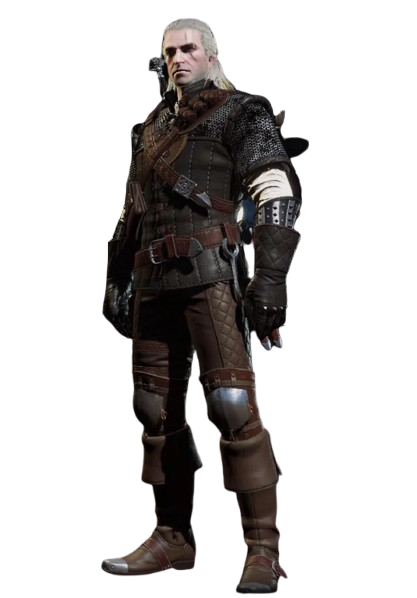

Геральт з Рівії
Геральт — це професійний мисливець на монстрів, якого ще називають Білим Вовком. Він пройшов крізь важкі мутації в дитинстві, завдяки чому отримав надлюдську силу, швидку реакцію та вміння бачити в темряві. Геральт подорожує світом, виконує замовлення на чудовиськ, користується двома мечами та захищає тих, хто цього потребує.
Сюжет та світ гри
- Зав'язка: Після років розлуки відьмак Ґеральт дізнається, що його названа донька Цірі повернулася в їхній світ. Вона володіє магічною силою Старшої Крові, здатною переміщувати її крізь простір та час.
- Загроза: Через цей унікальний дар за нею полює Дике Полювання — армія примарних ельфійських вершників з іншого виміру, які хочуть використати силу Цірі, щоб урятувати свій власний світ, знищивши при цьому людський.
- Пошуки: Ґеральт вирушає слідами дівчини через землі, понівечені війною та чудовиськами. Він розгадує таємниці Кровавого Барона на болотах Велена, допомагає магам у великому місті Новіград та втручається в міжусобиці вікінгів на островах Скелліге.
- Фінал: Знайшовши Цірі, Ґеральт разом із друзями дає бій Дикому Полюванню у відьмачій фортеці Каер Морхен. Але доля світу вирішується не мечами: саме від батьківської підтримки Ґеральта залежить, чи знайде Цірі в собі сили зупинити глобальну загрозу — Білий Хлад.
Фото персонажа
